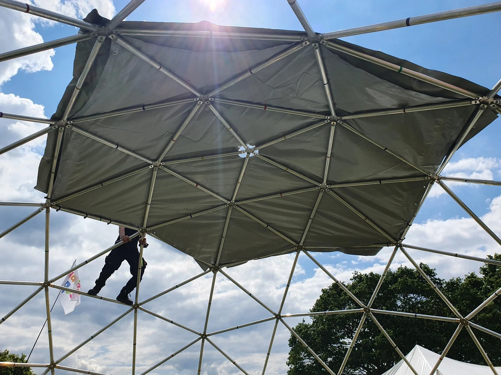

A house is nice, but it can't go on vacation with you.
Metalab Dome is built from the ground up to be portable. Unlike a tent, it provides enough
space for all activities where you usually want to have a house.
Metalab Dome is designed to fit into a compact transporter. It goes wherever you go.
With its full aluminium design, transport weight is not an issue.
If you know how to use screws, you know how to assemble Metalab Dome.
Metalab Dome only needs a few steps to assemble. It comes with detailed instructions
thoroughly tested in the field.
Metalab Dome underwent a forces simulation to make sure that people can climb on it
during construction. A ladder is recommended, but not required.

Metalab Dome can house whatever you want it to house.
With its diameter of 9 meters, Metalab Dome can accommodate many activities.
Metalab Dome can be a chillout lounge, a community hub, or a party location. Your
imagination is the limit! The covers can be opened to welcome new visitors or closed when more privacy
is needed.
Want the technical details?
All the math, more pictures and the parts list can be found in our wiki (in German).